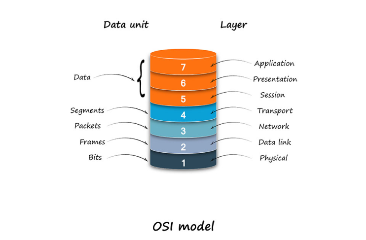

Modello ISO/OSI
Che cos'è?
Il modello ISO/OSI in telecomunicazioni e in informatica, è uno standard stabilito nel 1984, nato per la necessità di avere un sistema per l’interconesione tra diversi sistemi di computer. Andando a creare così una serie di norme tecniche per legge per reti di calcolatori. Questo modello stabilisce per l’architettura logica di rete una struttura a strati composta da una pila di protocolli di comunicazione di rete suddivisa in 7 livelli, che eseguono tutte le funzionalità della rete.

Il modello ISO/OSI è costituito da una pila di protocolli attraverso i quali viene ridotta la complessità implementativa di un sistema di comunicazione per il networking. In particolare ISO/OSI è costituito da livelli che definiscono e racchiudono in sé a livello logico uno o più aspetti fra loro correlati della comunicazione fra due nodi di una rete. Utilizzando un modello a livelli si può ridurre la complessità della comunicazione e assegnare il lavoro a diversi strati. Il modello a livelli permette inoltre la modularità degli strati, ovvero si potrebbero modificare le funzionalità di un singolo strato senza dover cambiare tutti gli altri.
Perchè è nato il modello ISO/OSI?
Negli anni 70 i dispositivi di rete erano costruiti da aziende diverse che realizzavano hardware e software con l’obiettivo di far comunicare esclusivamente i prodotti dell’azienda produttrice senza curarsi della comunicazione con sistemi diversi. Con il passare del tempo nacque la necessità di collegare tra loro dispositivi anche a media distanza, per esempio tra due sedi delle stessa azienda poste in città differenti. Il modello ISO/OSI facendo creò un protocollo di comunicazione che fosse in grado di far comunicare sistemi con caratteristiche diverse tra loro.
Come funziona?
L’informazione che un mittente vuole inviare a un destinatario passa da un livello superiore a quello inferiore e subisce man mano delle trasformazioni che consentono alla fine di trasmetterla su un canale fisico. Il principio che sta alla base delle architetture di rete che utilizzano il modello a strati, è l'incapsulamento. Questo processo si verifica nel momento in cui un Computer A vuole inviare dati Computer B, e l'informazione passa da un livello superiore a quello inferiore, e ogni livello aggiunge a quest'ultimo un pacchetto di dati del livello, si dice che il pacchetto viene incapsulato. Mentre nella ricezione del pacchetto aviene il decapsulamento, poichè ogni livello partendo da quello fisico rimuove le informazioni fino a estrarre il pacchetto originale.
Modello TCP/IP
TCP/IP è un protocollo di collegamento dati utilizzato in Internet per consentire a computer e altri dispositivi di inviare e ricevere dati, formato da due protocolli principali:
- IP (Internet Protocol);
- TCP (Trasmission Control Protocol).
IL TCP/IP si basa su 4 livelli a differenze dei 7 del modello ISO/OSI.
Il livello “Network”(3°) del ISO/OSI è in corrispondenza del livello “Internet”(2°) del TCP/IP, stessa cosa per il livello di Transporto. Nel TCP/IP non ci sono i livelli di presentazione e di sessione perciò le loro caratteristiche vengono implementate nel livello d’applicazione. Mentre i due livelli inferiori del ISO/OSI, ovvero Data Link e Physical, corrispondono al primo livello nel TCP/IP chiamato Network Access(Host - rete).
Differenze tra TCP/IP e ISO/OSI
- TCP/IP è un modello client-server, cioè quando il client richiede un servizio, viene fornito dal server. Considerando che, OSI è un modello concettuale.
- TCP/IP è un protocollo standard utilizzato per ogni rete inclusa Internet, mentre OSI non è un protocollo ma un modello di riferimento utilizzato per comprendere e progettare l’architettura del sistema.
- TCP/IP è un modello a quattro livelli, mentre OSI ha sette livelli.
- TCP/IP segue l’approccio orizzontale. D’altra parte, il modello OSI supporta l’approccio verticale.
- TCP/IP è tangibile, mentre OSI non lo è.
- TCP/IP segue un approccio dall’alto verso il basso, mentre il modello OSI segue un approccio dal basso verso l’alto.